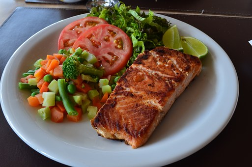

Faydaları say say bitmeyen somon fırında en sağlıklı haliyle pişiyor, birçok farklı sebzeyle de şovunu yapıyor. Hafif nemli dokusu onu daha çok sevmenize sebep olacak.

Fırında somon balığı
Malzemeler
- 2 adet fileto somon
- 1/2 çay bardağı zeytinyağı
- 1 adet limon suyu
- 1/4 demet dereotu
- 2 diş sarımsak(dövülmüş)
- 3-4 dal taze kekik
- Roka
- İsteğe bağlı diğer yeşillik ve sebzeler
Nasıl yapılır?
- Sarımsakları dövün. Zeytinyağı, limon ve sarımsakları karıştırıp, somonların üzerine sürün.
- Balıkları buzdolabında 1-1,5 saat dinlendirin.
- Fırın tepsisine yağlı kağıt serin. Somonları yağlı kağıdın üzerine yerleştirin.
- Fırında kontrollü olarak 15-18 dakika pişirin.
- Fırından çıkan somonları taze kekik ve dereotuyla süsleyin.
- İstediğiniz sebzeler eşliğinde dilediğiniz sunumu yapabilirsiniz.
İŞTE PÜF NOKTALAR!!!
- Çok uzun süre pişirmek balığın suyunu kaybetmesine neden olacağından fırında çok uzun süre tutulmamalıdır.
AFİYET OLSUN